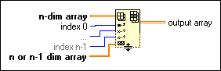

Insert Into Array Function
Owning Palette: Array VIs and Functions
Requires: Base Development System
Inserts an element or subarray into n-dim array at the point you specify in index.
When you wire an array to this function, the function resizes automatically to display index inputs for each dimension in the array. If you do not wire any index inputs, the function appends the new element or subarray to the end of the n-dim array. If the index input is larger than the array size, the function does not insert anything into the input array.

 Add to the block diagram Add to the block diagram |
 Find on the palette Find on the palette |